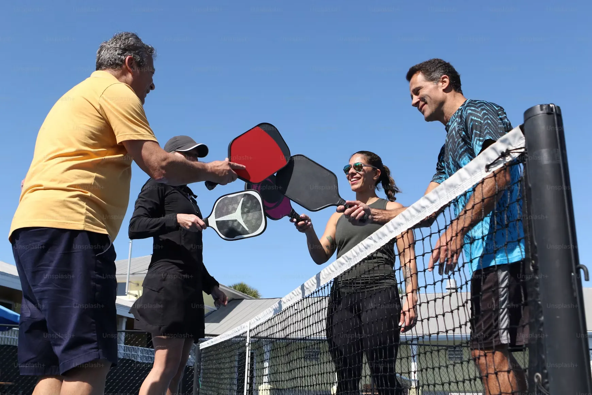
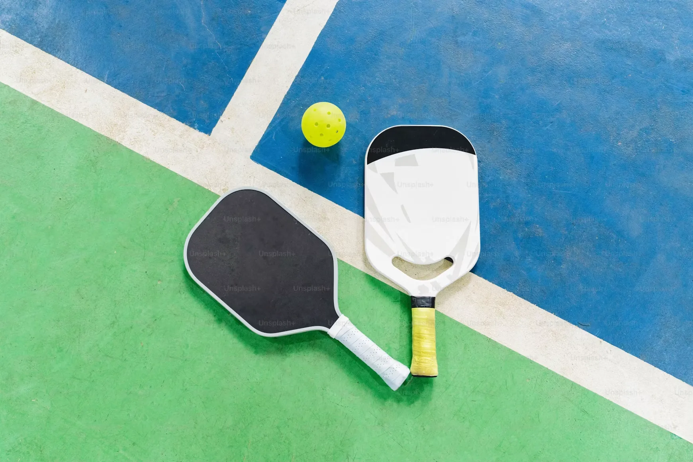
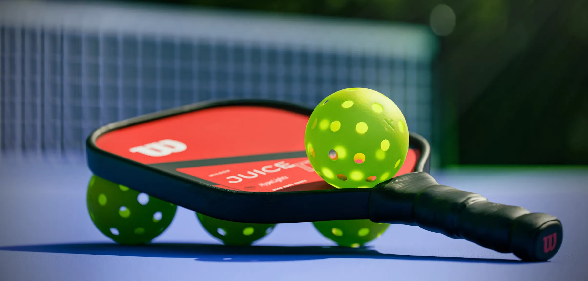
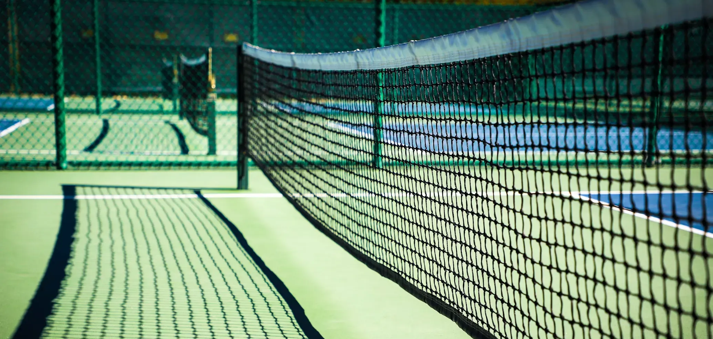
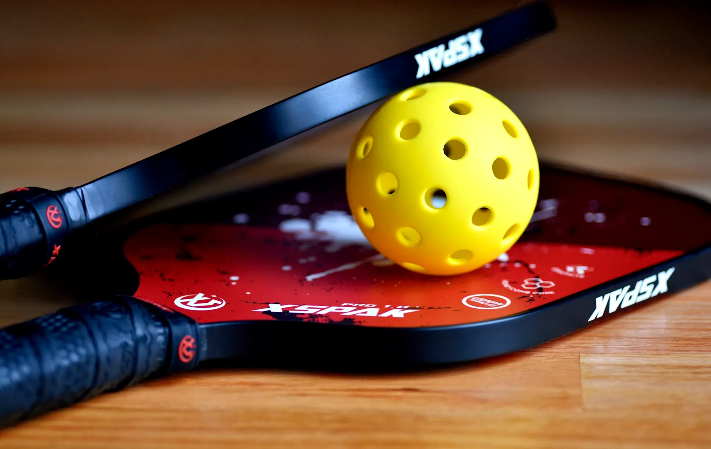

"遊"について"
ピックルボールサークル「遊(ユウ)」は、名古屋市内及び近郊エリアを中心に活動する
初心者でも気軽に楽しめるスポーツサークルです。
「仲良く・楽しく・汗かいて」をコンセプトに、
和やかな雰囲気の中でピックルボールを楽しんでいます。
スポーツ経験がなくても、運動が久しぶりでも大丈夫。
技術よりも“楽しむこと”を大切にしながら、ゆったりとしたペースで活動しています。

ピックルボールとは
テニスコートの約1/3、バドミントンコートと同じ広さのコート内で、
パドルというラケットでプラスティック製の穴あきボールを打ち合うスポーツです。
アメリカでいま最も急成長しているスポーツと言われており、
近年日本国内でも注目されてきています。
緩すぎず激しすぎずのちょうど良い運動量、そして安全にプレイできるため、
子どもからシニアまでみんなで楽しめます。

ルール
基本ルール
ピックルボールは、バドミントンコートと同じ広さのコートで行うスポーツです。
パドルと呼ばれるラケットで、プラスチック製の穴あきボールを打ち合います。
ゲームはサーブから始まり、ラリーを続けて相手コートに返せなかった側が失点します。
サーブは必ず 下から打つアンダーサーブで、クロス方向に入れます。
運動量はほどよく、初心者でも安全に楽しめるスポーツです。
パドルと呼ばれるラケットで、プラスチック製の穴あきボールを打ち合います。
ゲームはサーブから始まり、ラリーを続けて相手コートに返せなかった側が失点します。
サーブは必ず 下から打つアンダーサーブで、クロス方向に入れます。
運動量はほどよく、初心者でも安全に楽しめるスポーツです。
キッチンルール(ノンボレーゾーン)
ネット前の約2mのエリアを通称「キッチン」と呼びます。
このエリアでは、ノーバウンドで打つこと(ボレー、スマッシュ)が禁止されています。
キッチンに入ること自体は問題ありませんが、安全にプレイするための大切なルールで、初心者が最も間違えやすいポイントです。
このエリアでは、ノーバウンドで打つこと(ボレー、スマッシュ)が禁止されています。
キッチンに入ること自体は問題ありませんが、安全にプレイするための大切なルールで、初心者が最も間違えやすいポイントです。
ダブルバウンドルール
ピックルボールの特徴的なルールが ダブルバウンドルールです。
①サーブを受ける側は、ボールを 1回バウンドさせてから返す。
②サーブ側も、返ってきたボールを 1回バウンドさせてから返す。
この2つが終わった後から、ボレー及びスマッシュ(ノーバウンド)が可能になります。
序盤のラリーが安定し、初心者でもプレイしやすくなるためのルールです。
なお、ピックルボールではサーブがネットに触れた場合でもプレーは続行となり、サーブの打ち直しはありませんので、それも覚えておくとよいでしょう。
①サーブを受ける側は、ボールを 1回バウンドさせてから返す。
②サーブ側も、返ってきたボールを 1回バウンドさせてから返す。
この2つが終わった後から、ボレー及びスマッシュ(ノーバウンド)が可能になります。
序盤のラリーが安定し、初心者でもプレイしやすくなるためのルールです。
なお、ピックルボールではサーブがネットに触れた場合でもプレーは続行となり、サーブの打ち直しはありませんので、それも覚えておくとよいでしょう。
得点方法
得点できるのは サーブ側のみです。
ラリーに勝っても、受け側には点が入りません。
サーブ権は「1番 → 2番 → 相手チーム」へと順番に移ります。
11点(または9点)先取でゲームが終了します。 シンプルなルールですが、サーブ権の流れが独特なので慣れるまではゆっくり進めるのがおすすめです。
サーブ権は「1番 → 2番 → 相手チーム」へと順番に移ります。
11点(または9点)先取でゲームが終了します。 シンプルなルールですが、サーブ権の流れが独特なので慣れるまではゆっくり進めるのがおすすめです。
よくある反則
初心者が特にやりがちな反則をまとめました。
・キッチン内でボレーしてしまう
・ダブルバウンドルールを守らずに打ってしまう
・サーブが腰より上で打たれる(アンダーサーブ違反)
・ボールがベースラインを超える
・サーブがネットにかかる
反則を恐れる必要はありませんが、少しずつ覚えていくとより楽しくプレイできます。
・キッチン内でボレーしてしまう
・ダブルバウンドルールを守らずに打ってしまう
・サーブが腰より上で打たれる(アンダーサーブ違反)
・ボールがベースラインを超える
・サーブがネットにかかる
反則を恐れる必要はありませんが、少しずつ覚えていくとより楽しくプレイできます。

お知らせ
2026.09.05
各施設及びアクセス情報について
2026.09.05
ホームページを公開しました
ピックルボールサークル「遊」のホームページを公開しました。サークル紹介、練習日程、活動場所などを掲載しています。今後も必要に応じて情報を更新していきます。
2026.99.99
テスト
これはテストです。
練習日程
2026年9月
参加方法
現在、募集は行っておりません。
活動場所
名古屋市内及び近郊エリアを中心に活動しています。地図やアクセス情報はお知らせ欄をご確認ください。
